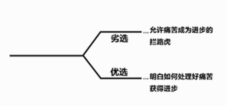
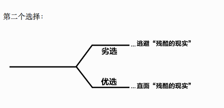
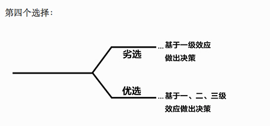
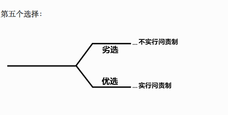
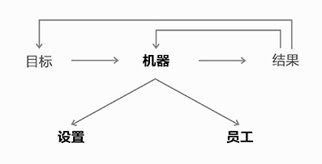

Principles 原则 [Note]
——Ray Dalio
2016-05-30
本书的论说方式大多是作者自己的经验和见解，例子也多是基于个人。
作者本人也许就是很多人相信的最好证据了吧。
所以，阅读的时候，大胆的质疑吧。
目录：
[TOC]
The Personal Evolutionary Process
前提：生活的质量取决于我们做决定的质量。
那么，我们要如何做出明智的决定呢？通过学习。
Reality + Dreams + Determination = A Successful Life
你想要什么？你的梦想是什么？
People need meaningful work and meaningful relationships in order to be fulfilled.
面临选择的分叉口时，应该怎么做？
There are 5 decision trees:
1. 首先，是认清现实

人们往往逃避事实，因为事实令人痛苦。但是，痛苦就一定是坏事吗？
对于痛苦，你可以选择逃避；也可以选择理性的面对，深刻的反思自己。后者能使你获得成长。
Pain + Reflection = Progress
How big of an impediment is psychological pain to your progress?
2. 第二个选择

前提：基于事实跟能够做出明智(sound)的决定。
现实：人们往往混淆自认为的现实和真实的现实。
So:
Ask yourself, "Is it true?"
How much do you let what you wish to be true stand in the way of seeing what is really true?
3. 第三个选择

对于自己的无知，不要去掩饰表面，而要提出应对的方法。诚实面对并寻求他人帮助就很好。
Find the weakness and avoid them stand in the way of achieving the goals.
So, what are your biggest weaknesses?
品质的两面性，作者举例自己难以记住非逻辑性的事物，难以忍受重复的工作。而能记住富有逻辑的事物和情景。所以他避免此缺点的方式是带上智能手机；）
我呢？我最大的缺点是什么？在做决策的时候，总是会纠结，会花去比较长的时间，尽可能想要做出最好的决策。所以会想很多，也会和身边的朋友讨论。但我并不优柔寡断，一旦纠结的时间过去，我做出了决定，便会认真的去做，而不是想象如果做了另外一个决定会怎么样。另外我尝试的方法是，限制自己在一定时间内，做出当时所能做出的最好的决定。
How much do you worry about looking good relative to actually being good?
4. 第四个选择

例如，健身的一级效应为承受痛苦，花费时间，这一般不是人们渴望的。而其二级效应，即更健康，外貌变得更具吸引力，则是人们渴望的。
How much do you respond to 1st order consequences at the expense of 2nd and 3rd order consequences?
5. 第五个选择

How much do you let yourself off the hook rather than hold yourself accountable for your success?
In summary, I believe that you can probably get what you want out of life if you can suspend your ego and take a no-excuses approach to achieving your goals with open -mindedness, determination, and courage, especially if you rely on the help of people who are strong in areas that you are weak.
你相信作者所言吗？他的思想对你有影响吗？你决定采取行动吗？
Your Two Yous and Your Machine

客观的评价你自己，人无完人。
从战略上而言，你需要把合适的人安排在合适的位置。如果发现，自己不合适一个位置，那么就解雇自己，找一个擅长的人去做。不要事必躬亲。其实你应该开心，不用试着证明自己可以做好一切，而要关注实现目标的战略是否正确。
The biggest mistake most people make is to not see themselves and others objectively.
（很赞同，作者所说的从大局上考虑战略，不用事必躬亲。但有的事情，是没办法找人代替的不是吗？比如说，大家都经历过的考试；比如说寻找合适的另一半。这些事情都是需你自己做的。）
How good are you in approaching life as a “higher level thinker” rather than as a doer?
软件架构设计，不也是这样站在高层次去思考吗？
My 5-Step Process to Getting What You Want Out of Life
这一部分作者开始讲解他自己的方法论。管理是在不断的做决策。要想做出明智的决策，需要基于事实，需要系统化的思维。懂得如何最大化利用已有的资源，去实现自己的目标。时间是最紧要的资源，你需要思考事情的优先级顺序。比如我现在的阅读，优先级高吗？很显然，不高。
少有人走的路
心理学书籍，唯一给我的惊喜，是作者举出的例子，有一种启发式的力量，这些例子，会让你联想到自己的经历。
不过到了书的后半部分，讲爱啊这类的，太空洞，这样的论说方式无法是我信服。
NOTES FROM
少有人走的路
M·斯科特·派克
April 20, 2016
总序 作品相关
应届大学毕业生选择考研的动机仅仅是：害怕毕业。他们是害怕毕业，还是在拒绝成熟？
你是为什么呢？
April 13, 2016
第一部分：自律
主要包括四个方面：推迟满足感、承担责任、尊重事实、保持平衡。
April 20, 2016
第一部分：自律
自律的核心，就是学习自我照顾，承认自我价值的重要性，并采取一切措施照顾自己，这是走向自立的关键
April 20, 2016
第一部分：自律
人人都有这样的倾向：问题一旦出现，就要立刻解决，不然他们就会思绪烦乱、寝食不安，这样的心态显然不切实际，但一厢情愿地等待问题自行消失，这种心态更为可怕，通常不会带来任何好结果有问题是需要慢慢解决的
April 20, 2016
第一部分：自律
忽视问题的存在，反映出人们不愿推迟满足感的心理。我说过：直面问题会使人感觉痛苦。问题通常不可能自行消失，若不解决，就会永远存在，阻碍心智的成熟。我们都有这样的体验：问题降临，必将带来程度不同的痛苦体验。尽可能早地面对它们，意味着推迟满足感，放弃暂时的安逸和程度较轻的痛苦，体验程度较大的痛苦，如此才会得到回报。现在承受痛苦，将来就可得到更大的满足感；而不谋求解决问题，将来的痛苦会更大，延续的时间也更长。
April 20, 2016
第一部分：自律
在冲绳岛，有一位年轻的军人妻子，她用剃须刀片割开了手腕，被送到抢救室急救。后来，我在病房里见到她，我问她为什么要这么做。
我以前一直觉得用例子讲道理的书 多数很没说服力 现在看来是选择例子的问题
April 20, 2016
第一部分：自律
人生一世，正确评估自己的角色，判定该为何人、何事负责，既是我们的责任，也是无法逃避的问题
April 20, 2016
第一部分：自律
如果得到治疗，他们就会知道，作为成年人，整个一生都充满选择和决定的机会
April 20, 2016
第一部分：自律
我把观察结论告诉他，对于他没有多少好处，甚至是莫大的冒犯。我使他丧失了就诊的勇气，这对医生而言，完全是一种失败。
April 20, 2016
第一部分：自律
想在组织或集体中发挥更大的作用，更需注重表达意见的时间、场合和方式
April 20, 2016
第一部分：自律
首先，永远不要说假话，避免黑色谎言。其次，要牢牢记住：一般说来，不说出全部真相，基本上就等于说谎；非得保留部分真相，那一定是情非得已，且是出于重大道德因素的考虑。第三，不可因个人自私自利的欲望，例如满足权力欲、刻意争取上司的欢心、逃避修订心灵地图的挑战等等，将部分真相隐瞒下来。第四，只有在对对方确有好处的情况下，才可有选择地隐瞒部分真相。第五，尽可能忠实地评估对方的需要。这是一种极为复杂的规则，只有以爱为出发点，才能做出恰当的评判和选择。第六，评估他人对事实的需要，在于对方能否借助我们提供的事实，使心灵获得成长。还要记住，在评估别人运用事实使心灵获得成长的能力上，我们通常都是低估而非高估了这种能力。
April 20, 2016
第一部分：自律
为使人生规范、高效、务实，必须学会推迟满足感，要把眼光放远。还要尽可能过好眼下的生活，要通过适当的努力，让人生的快乐多于痛苦
April 20, 2016
第一部分：自律
要使心智成熟，就须在彼此冲突的需要、目标、责任之间，取得微妙的平衡，这就要求我们利用机遇，不断自我调整
April 20, 2016
第一部分：自律
回避放弃只有一个办法，那就是永远停在原地，不让双脚踏上旅途。
April 20, 2016
第一部分：自律
放弃固有的人格、放弃根深蒂固的行为模式或意识形态甚至整个人生理念，其痛苦之大可想而知。一个人要想有所作为，在人生旅途上不断迈进，或早或晚，都要经历需要放弃的重大时刻
April 20, 2016
第一部分：自律
放弃某种心爱的事物———至少是自身熟悉的事物，肯定让人痛苦，但适当放弃过去的自我，才能使心智成熟
April 20, 2016
第一部分：自律
抑郁是一种显著的信号———想适应新的状况，就要做出重大改变
April 20, 2016
第一部分：自律
人生各个阶段，会出现各种各样的危机，只有放弃过去过时的观念和习惯，才能顺利进入人生下一阶段从学校走向职场
April 20, 2016
第一部分：自律
生命的意义恰在于“死亡”这一现实，这是哲学和宗教的核心。
April 20, 2016
第一部分：自律
兼容并包，意味着既要肯定自我，以保持稳定，又要放弃自我，以腾出空间，接纳新的想法和观念，实现自我平衡
April 20, 2016
第一部分：自律
面对陌生的人、事、物，我需要让昔日的经验、当前的需求和未来的期待一并出席，共同“会诊”，对我的需求和现实状况进行评估，做出恰当的判断和决定。为了体验新鲜事物的独特性，我必须以包容一切的姿态，说服既有的成见和观念暂时让位，让陌生、新奇的事物进入感官世界。在此过程中，我必须竭尽全力，尽可能呈现出成熟的自我、诚实的姿态、巨大的勇气，不然的话，人生的每一分每一秒，都将是过去经验的一再重复。为了体验所有人、事、物的独特和新鲜之处，我必须让它们进入我的灵魂，并且驻足扎根。我必须完全释放自我，甚至不惜把过去的自我完全打破。拥抱改变
April 20, 2016
第二部分：爱
的定义是：爱，是为了促进自我和他人心智成熟，而具有的一种自我完善的意愿。
April 20, 2016
陷入情网
在出生第一年，我们作为婴儿，就知道了一些基本常识：我们是谁，我们不是谁；我们是什么，我们不是什么
April 20, 2016
陷入情网
坠入情网，似乎能够使之实现“逃亡”，摆脱孤独和寂寞（尽管这种摆脱是暂时性的）；坠入
April 20, 2016
陷入情网
双方都惊讶而痛苦地意识到，自己没有跟对方融为一体，欲望、爱好、想法相去甚远，局面好像难以改变，差距好像无法缩短
April 20, 2016
自我界限
我们贯注的对象，正是所爱的人或所爱的事物。倾心于自我界限以外的某个对象，就会使之占据我们的心灵
All Excerpts From
斯科特·派克, M. “少有人走的路.” iBooks.
This material may be protected by copyright.
《如何阅读一本书》
此书需慢慢咀嚼、消化。
问出四个问题来：
1. 这本书到底在说什么？给书分类
2. 细部说了什么？作者是怎么说的？组织结构
3. 这本书说得有道理吗？是全部有道理还是部分有道理？
4. 这本书与我何干？
四个阅读的层次：
1. 基础阅读
2. 检视阅读
3. 分析阅读
4. 主题阅读
书籍的分类
你一定要知道自己在读的是哪一类的书，越在知道越好。最好早在你开始阅读之前就先知道。
虚构VS论说
论说
论说：
一本论说性的书的主要目的是在传达知识。任何一本书，如果主要的内容是由一些观点、理论、假设和推断所组成，并且作者多少表示这些主张是有根据的，有道理的，那这种传达知识的书，就是一本论说性的书。
不同类别的书籍是在谈什么？
科学：心理学和几何学
论说类分为理论性和实用性。
实用是与某种有效的做法有关，不管是立即的还是长程的功效。而理论所关注的却是明白或者了解某件事。知识和行动的区别。
要让知识变实用，就要有操作的规则。我们一定要超越“知道这是怎么回事”，进而明白“如果我们想做些什么，应该怎么利用它”。
实用的书告诉你应该怎么去做：
- 某种艺术的学习技巧
- 一个领域的实用手册：工程、医药或烹饪
- “教导性”的深奥理论：经济、伦理或政治问题(规范性的书)
- 演说
理论性作品的分类:
- 历史：历史就是纪事。
- 科学：科学家追求的是定律和通则。
- 哲学：一般真理。与科学提问和解答问题的方式不同。
如何区分科学和哲学？
如果一本理论的书所强调的内容，超乎你的日常、例行、正常的生活经验，那就是科学的书。否则就是一本哲学的书。
科学家以实验作为基础，而哲学家主要靠思考。
科学家会从他思维特殊经验的结果作举证，哲学家却以人类的共同性作例证。
Show and Tell
show and tell ——how everybody can make extraordinary presentations
Three Rules:
1. Tell the truth
2. Tell it with a story
3. Tell the story with pictures
失控
凯文·凯利, 失控:机器、社会与经济的新生物学
人类能够从生物学中提取自然的逻辑并用以制造出一些有用的东西，这个发现真令人惊奇。
loc. 205-206
卜更能代表人类在未来所要发明的东西——生长出来而不是制造出来的产物。
loc. 214-215
是一个白痴的选举大厅，由白痴选举白痴，其产生的效果却极为惊人。这是民主制度的真髓，是彻底的分布式管理。曲终幕闭，按照民众的选择，蜂群挟带着蜂后和雷鸣般的嗡嗡声，向着通过群选确定的目标前进。蜂
loc. 302-304
。动画绘制者先制作一只蝙蝠，并赋予它一定的空间以使之能自动地扇动翅膀；然后再复制出几十个蝙蝠，直至成群。之后，让每只蝙蝠独自在屏幕上四处飞动，但要遵循算法中植入的几条简单规则：不要撞上其他的蝙蝠，跟上自己旁边的蝙蝠，离队不要太远
loc. 374-376
，群体被看作是一种自适应的技巧，适用于任何分布式的活系统，无论是有机的还是人造的
loc. 385-386
涌现是一种非常普遍的自然现象
loc. 398-399
一个斑点大的蜜蜂大脑，只有6天的记忆，而作为整体的蜂巢所拥有的记忆时间是3个月，是一只蜜蜂平均寿命的两倍。
loc. 412-413
等到某一阶段，当复杂度达到某一程度时，「集群」就会从「虫子」中涌现出来。
loc. 421-422
能揭示单个蜜蜂体内是否融合着蜂群特性。理论家们是这样说的：要想洞悉一个系统所蕴藏的涌现结构，最快捷、最直接也是唯一可靠的方法就是运行它。要
loc. 426-427
我们的每个记忆都被精确地刻划在它自己的碟片上，由不偏不倚的大脑忠实地将其分类归档，
loc. 487-488
这些正是我们通过感官所接收到的原始印象，
loc. 513-514
「认知的核心过程与感知的关系非常非常紧密。」
loc. 526-527
演讲的艺术
史迪芬·卢卡斯, 演讲的艺术(第8版)
在群体前自信、清楚地表达自己的观点，都是极为重要的能力。
loc. 44-44
演讲成功与否关键在于思考。在当今世界，名声与表象往往掩盖了思想和实质，严谨思考，尤其显得重要
loc. 67-67
不过，在你一生的某一刻，也许是明天，也许是五年之后，你一定会有公共演讲的强烈需求。
loc. 249-250
Notes: 1) 大学
关键在于，成功的人学会了把自己的紧张状态转化成一种优势。
loc. 336-337
树立信心的另一个关键是挑选你真正感兴趣的话题，并认真做准备，这样的话，你的演讲非成功不可。
loc. 366-367
就像一个演员反复练习自己担任的角色，直到自己完全满意为止一样。
loc. 378-378
就可以集中精力与听众交流自己的思想，而不是总在那里想着自己的担心与焦虑。
loc. 391-391
准备演讲时，要确保进行充分的准备，并尽一切努力把自己想说的话传达给听众。不要担心不完美，也不要担心万一犯了错会带来什么后果。一旦让自己的思想摆脱了这些心理负担，你会发现，信心百倍又热情高涨地走上演讲台还是很容易的事。
loc. 436-438
。只有当你的自信心增强了，你才会坦然站在众人面前，告诉他们你在想什么、你在感受什么，以及你了解什么，并使听众想到、感受和了解同样的一些东西。
loc. 456-458
什么是批判性思维？在某种程度上它关乎逻辑，就是能在别人的论点中捕捉到差错，而在自己演讲时加以避免；它还涉及相关的技能，比如区分事实与观点，判断一些说法的可信度，评估证据是否可靠
loc. 474-476
广义上来说，批判性思维就是集中和有组织的思维能力——能够清楚地看出各种观点之间的关系的能力
loc. 477-477
你会增强清晰和准确地思考的能力
loc. 486-486
。不管用哪种语言交流，其中都会包含有七大要素：讲话的人、要说的话、渠道、听众、反馈、干扰和说话的场合
loc. 496-497
是要把你想要传达出去的信息成为实际交流出去的信息。要达到这个目标取决于你说什么（语言信息）以及如何说（非语言信息）
loc. 516-517
听众的思维框架，就是指其知识、经验、目标、价值观和态度的总和。
loc. 541-541
。你在准备演讲的时候就必须了解他们的观点，还必须尽量使他们跟你的演讲产生联系。
loc. 553-554
听众是否前倾身体听你说话，似乎在给予密切的关注？他们是否因为赞同而鼓掌？他们是否在你开玩笑的时候放声大笑？他们脸上是否流露出揶揄的表情？他们是否不停变换两腿的姿势，还不时地看表？
loc. 566-568
另外两种干扰是内在的，来自听众自身，而不是外部
loc. 581-581
一个成功的演讲人，一定会显示出对演讲听众的民族文化的充分尊敬
loc. 677-678
应该调查全部的事实，掌握一个问题涉及的多个层面，找到有竞争力的观点，把准确的事实讲出来。
loc. 867-868
这些不诚实行为包括篡改统计数字、断章取义、假造事实及数据来源，将尝试性的发现当作确切的结论，以偏概全、引述罕见例子作为典型例子，把轶闻趣事和半假半真的事情当作证据
loc. 882-884
有位作家解释说：“我们的身份，我们是谁，是干什么的人，都会受到人们是怎样称呼我们的名字极大影响，还会受到给我们贴上标签的那些文字的影响。”正
loc. 889-891
这个问题不仅仅是一个政治问题，而且还是尊敬现代社会不同团体尊严的大事。
loc. 905-906
会向自己提出这样一些问题：“我选择的论题是否适合听众？”“我的论证材料是否清晰和有说服力？”“我如何能够把思想表达得更有影响力一些？”这样一些战略性的问题。回答这些问题时，你会努力把演讲准备得更扎实，更有说服力，或者听起来更让人开心。
loc. 932-934
全国交流协会认为有道德的交流信条是“理解和尊重”演讲人，之后才“评判演讲内容，并据以作出反应”。
loc. 1110-1110
你的目标是仔细地倾听演讲人的思想，评估证据和推理过程，并就演讲作出自己理智的判断。
loc. 1112-1113
民主社会依赖于思想的自由和公开的表达。
loc. 1115-1115
重要的是要记住，确保一个人表达思想的自由并不意味着一定要同意他们的思想。你可以完全不同意那个人的演讲内容，但仍然尊重那个演讲人讲话的权利。
loc. 1132-1133
倾听的中心环节。另外的一些批判性思考技巧——区别事实和观点，找出推理过程中的错误，判断一个证据的可靠程度——在批判性倾听中也是尤为重要的。
loc. 1263-1265
关于一个演讲人的论据，有四个问题必须问： 准确吗？ 是从客观来源得到的资料吗？ 跟演讲人所说的话有关联吗？ 足够支持演讲人的观点吗？
loc. 1494-1496
．选择你其他课程中的一门课程。分析讲课的老师有哪些做得极有效率。找出老师能够更好地助学生跟上讲课思路的三个办法。
loc. 1595-1597
你应该选择很有限的几个要点，清楚地表达出来。
loc. 1609-1609
应该想办法让自己的演讲表达神秘且有悬念
loc. 1614-1615
听众一般还会对危险的情形、冒险和戏剧性的东西产生兴趣
loc. 1619-1619
你还可以利用丰富多彩和描述性的语言使自己的演讲生动有趣。
loc. 1624-1624
可能会想，是否应该利用幽默让自己的第一次演讲富有娱乐性。听众都喜欢有智慧的言论、玩笑和可乐的情形，但是，幽默只有在发挥较好的时候用起来才会有效果。
loc. 1631-1633
就称为主题组织法，它把演讲主题细分成自然的、逻辑的或传统的部分。
loc. 1659-1660
一旦选择好了这些要点，要确保每一个要点集中在演讲主题的一个方面
loc. 1663-1663
如果有可能，应该努力使用戏剧性的、清晰的、富于启迪的话结束演讲。例
loc. 1675-1676
告诉朋友一个有趣的故事，或者一次非同寻常的经验，你会照着稿子念吗？当然不会。你会记得故事的基本细节，可以给不同的朋友，在不同的场合，用多少有点不一样的语言进行讲述。你和朋友们一起感觉很放松，也很自信，你可以用对话的口吻和他们交谈。演讲时，你也应该这么做。
loc. 1707-1710
不管自己有多么紧张，一定要做出镇定和放松的样子来。
loc. 1730-1731
一定要从教室的左边看到右边，还要看中间，避免只看一两个注意听你演讲的人。演讲
loc. 1733-1734
头脑风暴 brainstorming 通过词语或概念的自由联想，为演讲主题激发各种点子的方法。
loc. 1912-1915
首先，快速回顾自己的经历、兴趣、爱好、技能和信仰等。
loc. 1918-1918
拿出一张纸，分成这样九个栏目：人物、地点、事物、事件、过程、概念、自然现象、问题和计划。
loc. 1921-1922
你能够延续她的联想轨迹吗？在第一栏，卡通让她想到了电视，电视让她想到了电影，再由电影想到了奥斯卡奖，有奥斯卡奖就有一些其他奖项，奖项又让她想到了彩票，而彩票是又一种形式的博彩。突然间，这位学生想到了读过的一篇文章，是美国日趋严重的赌博成瘾问题，一个想法便在她脑海里闪现出来了。
loc. 1978-1980
话题。如果你仍然弄不清楚，也不要绝望。还有第三个办法：到图书馆去，找一本百科全书、期刊数据库或其他什么资料来浏览，直到发现一个合适的演讲题目为止。
loc. 1984-1985
你的目的是要传递信息，而且要清晰、准确和有趣地传递信息
loc. 2022-2023
你的目标是要强化知识，进一步加深听众对这个话题的理解，让他们得到一些以前不曾具备的知识。
loc. 2025-2026
你希望改变或塑造听众的某种态度甚至引发他们开始行动。
loc. 2027-2027
但是，主要目的还在于争取使听众接受你的观点，让他们最终相信或去做什么事
loc. 2031-2032
你应该能够用一个简单的肯定句就可说明自己的目标（把关于……的情况告知听众，说服听众来……），这个句子必须明确说明，你希望以自己的演讲完成一件什么样的事情
loc. 2042-2044
而且还有演讲人希望听众听完演讲后能够得知的东西
loc. 2056-2056
而事实上，你的任务是要向一群具体的人告知某些具体的内容
loc. 2064-2064
避免在目标陈述中使用比喻
loc. 2078-2078
如果具体目标陈述如此模糊，你就没有一个系统的方法来限制自己查找资料的范围，也不知道应该将哪些内容包括在演讲内，哪些应该排斥出去。
loc. 2104-2106
Notes: 1) 人生目标不也是如此吗?
我的目标是否符合要求？
loc. 2116-2116
能否在规定的时间内完成自己的目标？
loc. 2118-2119
目标与听众有关吗？
loc. 2127-2127
外，当讲到听众明显不关心的话题时，花时间在演讲中把话题跟他们的目标、价值观、兴趣或福利等联系起来。我们会在下一章讲到如何做到这一点。
loc. 2133-2135
话题对听众来说是否太琐碎了？
loc. 2135-2135
话题对听众来说是否太专业了？
loc. 2142-2142
思考中心思想的另一个方法，是把它当作存留信息——你希望听众几乎忘记了演讲中的所有内容之后仍然记住的信息。
loc. 2168-2170
第二个无效的中心思想也太宽泛了，而且它还有一个更大的毛病——不是一个完整的句子。
loc. 2224-2224
真正好的传达技巧并不让人注意到技巧本身，他会传达演讲人的思想，清晰而生动，不会让听众分心
loc. 6147-6148
没有任何东西能够替代你自己的经验。所以，请鼓足勇气！教
loc. 6155-6156
针对前面的演讲发表自己的意见时，可以采用这样四个简单的步骤：首先，表明你是否接受上述的观点；其次，说明你想表达的观点；第三，用合适的统计数据、案例或证词来支持你的观点；第四，总结自己的观点。这个“四步法”可以帮助你迅速而清晰地组织好自己的思想。
loc. 6195-6198
不管自己内心多紧张，都要尽力表现得镇定自若，让人从外表上看自信十足。
loc. 6202-6203
人类的声音是通过一系列的复杂步骤产生的：先从肺呼出空气开始，空气呼出时，经过声腔引起震动，并发出声音。声音经过咽喉、口腔和鼻腔时会被放大和修正，引起共鸣。共鸣声再通过舌头、嘴唇、牙齿和上腭的调节形成了元音及辅音。声音的各种组合最后形成了单词和句子。
loc. 6246-6248